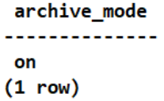

Before backing up the database, you must enable the archive mode. Otherwise, the backup fails.
Procedure
- Single or cluster (Pgpool, CLup, and HACS) instance: Enable the archive mode by modifying configuration file parameters.
- Use PuTTY to log in to the PostgreSQL database host. Perform the following operations on all nodes.
- Create a path for storing archive logs (WALs). The /mnt/server/archivedir/ path is used as an example in subsequent operations.
mkdir -p /mnt/server/archivedir/
- Grant the read and write permissions to the operating system user postgres who runs the database.
chmod 750 /mnt/server/archivedir/ chown postgres:postgres /mnt/server/archivedir/
- Run the su - postgres command to switch to the operating system user postgres who runs the database. Information similar to the following is displayed:
[root@pg_102_129 ~]# su - postgres [postgres@pg_102_129 root]$
- Log in to the PostgreSQL database.
cd /usr/local/pgsql/bin ./psql
- Run the show config_file; command to query the path to the postgresql.conf file. Information similar to the following is displayed:
postgres=# show config_file; config_file --------------------------------------- /usr/local/pgsql/data/postgresql.conf (1 row) - Press Ctrl+D to log out of the database management user postgres and log in to the PostgreSQL database host.
- Open the postgresql.conf file. The /usr/local/pgsql/data/postgresql.conf path is used as an example.
vi /usr/local/pgsql/data/postgresql.conf
- Find and modify the wal_level, archive_mode, and archive_command parameters in the postgresql.conf file as follows:
wal_level = replica # minimal, replica, or logical archive_mode = on # enables archiving; off, on, or always archive_command = 'cp %p /mnt/server/archivedir/%f' # command to use to archive a logfile segment

- Set wal_level to archive (replica for PostgreSQL 9.6 or later).
- Set archive_mode to on.
- Set archive_command to 'cp %p /mnt/server/archivedir/%f' and ensure that the archive log path is a single path.
- archive_command supports only the cp command.
- When modifying the postgresql.conf file, change the values of existing fields in the file. Do not add the same fields to the file. Otherwise, the restoration job will be affected.
- After the archive mode is enabled, you need to manually delete logs. Otherwise, the database cannot run properly.
- Exit the PostgreSQL database and restart it.
- Single instance/usr/local/pgsql/bin/pg_ctl indicates the path of pg_ctl in the PostgreSQL installation path. -D indicates the user-defined data directory. -l indicates the log output file specified during the PostgreSQL database startup. Before specifying the log output file, ensure that the file can be created successfully.
/usr/local/pgsql/bin/pg_ctl -D /usr/local/pgsql/data -l logfile restart
- Cluster instance (Pgpool)
- Stop the database on the standby node and then the database on the primary node.
/usr/local/pgpool/bin/pgpool -m fast stop su - postgres /usr/local/pgsql/bin/pg_ctl -D /usr/local/pgsql/data -l logfile stop
- Start the database on the primary node and then the database on the standby node.
su - postgres /usr/local/pgsql/bin/pg_ctl -D /usr/local/pgsql/data -l logfile start /usr/local/pgpool/bin/pgpool -n
- Stop the database on the standby node and then the database on the primary node.
- Cluster instance (CLup)
- Stop the database on the standby node and then the database on the primary node.
1) Log in to the CLup database management system.
2) Choose HA Cluster > HA Management, find the target cluster, and click Offline. After the cluster is brought offline, the cluster status changes to Offline.
3) Choose Instance > Instance List, find the target database instance, and click Stop to stop the standby database and then the primary database. After the database instances are stopped, their states change to Stopped.
- Start the database on the primary node and then the database on the standby node.
1) Choose Instance > Instance List, find the target database instance, and click Start to start the primary database and then the standby database. After the database instances are started, their states change to Running.
2) Choose HA Cluster > HA Management, find the target cluster, and click Online. After the cluster is brought online, the cluster status changes to Online.
- Stop the database on the standby node and then the database on the primary node.
- Cluster instance (HACS)
- Run the crm configure property maintenance-mode=true command to freeze the HACS cluster. After the HACS cluster is frozen, you can manually stop the PostgreSQL database.1) Stop the database on the standby node and then the database on the primary node.
su - postgres /usr/local/pgsql/bin/pg_ctl -D /usr/local/pgsql/data -l logfile stop
2) Start the database on the primary node and then the database on the standby node.su - postgres /usr/local/pgsql/bin/pg_ctl -D /usr/local/pgsql/data -l logfile start
- Run the crm configure property maintenance-mode=false command to unfreeze the HACS cluster.
- Run the crm configure property maintenance-mode=true command to freeze the HACS cluster. After the HACS cluster is frozen, you can manually stop the PostgreSQL database.
- Single instance
- Restart the PostgreSQL database and run the following command to check whether the archive mode is enabled:
show archive_mode;
If the function is enabled, the following information is displayed:

- Cluster instance (Patroni): Enable the archive mode by running database commands.
- Use PuTTY to log in to the PostgreSQL database host. Perform the following operations on all nodes.
- Create a path for storing archive logs (WALs). The /mnt/server/archivedir/ path is used as an example in subsequent operations.
mkdir -p /mnt/server/archivedir/
- Grant the read and write permissions to the operating system user who runs the database.
chmod 750 /mnt/server/archivedir/ chown postgres:postgres /mnt/server/archivedir/
- Run the su - postgres command to switch to the database administrator postgres. Information similar to the following is displayed:
[root@pg_102_129 ~]# su - postgres [postgres@pg_102_129 root]$
- Log in to the PostgreSQL database.
cd /usr/local/pgsql/bin ./psql
- On the PostgreSQL database host, run the following commands in sequence to enable the database archive mode:
alter system set wal_level= 'replica'; alter system set archive_mode= 'on'; alter system set archive_command ='cp %p /mnt/server/archivedir/%f';
archive_command supports only the cp command.
- Exit the PostgreSQL database and restart it.1) Stop all standby nodes.
systemctl stop patroni
2) Restart the primary node.systemctl restart patroni
3) Start all standby nodes.systemctl start patroni
- Restart the PostgreSQL database and run the following command to check whether the archive mode is enabled:
show archive_mode;
If the function is enabled, the following information is displayed: